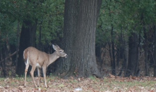

Hickory Oaks Forest Preserve
Located near the shoreline of Lake Michigan in northeastern Illinois, this nature preserve area, sounded by businesses, theme parks, and residential and industrial complexes, offers visitors a place to connect with nature on a year-round basis. The preserve is part of an ancient glacial lake and today is on the watershed that leads to Lake Michigan. The area is home to various wildlife and plants that are native to the area and still thrive in the sprawling urban area.
Hickory Oaks Forest Preserve has a nature center with a gift shop. The nature center contains many natural history exhibits, and the gift shop contains books, crafts, souvenirs, and seedlings of many of the plants you will encounter during your visit. The preserve has three trails: 1/4 mile, 1/2 mile, and 1-1/2 miles in length. In the winter, the longer trail is popular with cross-country skiers. The 1/4 mile trail is perfect for small school children to learn about the flora and to see a few gray squirrels and popular birds of the area.
Hickory Oaks is funded by generous donations from our many benefactors and always is looking for volunteers year round to give tours, help in the gift shop, or provide some labor in caring for our gardens. Yearly memberships are only $20 a year for adults and $30 a year for couples and families.